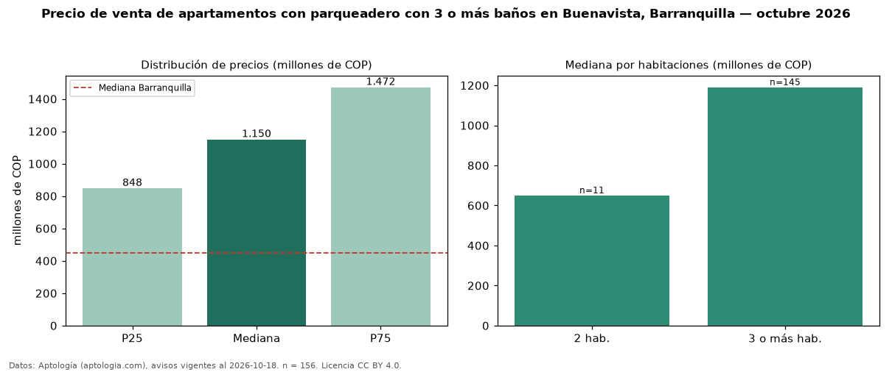

Precio de venta de apartamentos con parqueadero con 3 o más baños en Buenavista, Barranquilla — octubre 2026
COP 1,15 mil millones es el precio mediano de apartamentos con parqueadero con 3 o más baños en venta en Buenavista, Barranquilla (n = 156 avisos). Eso es 21 % más que la mediana de los apartamentos con parqueadero en venta de Buenavista (COP 950 millones, n = 211); este segmento reúne el 74 % de esos avisos. Por metro cuadrado, la mediana es COP 6,94 millones/m² (n = 156), 1 % por encima de los apartamentos con parqueadero en venta de Buenavista (COP 6,88 millones/m²). El área mediana anunciada es 162 m². El segmento con más oferta es el de 3 o más habitaciones (145 avisos, mediana COP 1,19 mil millones); pasar de 2 habitaciones a 3 o más habitaciones cambia la mediana +83 %. La administración mediana declarada es COP 904.500 al mes (n = 108). El estrato más frecuente es 6 (89 % de los avisos con estrato). La mitad central de los avisos va de COP 848 millones a COP 1,47 mil millones (razón 1,7), una dispersión moderada. Datos: Aptología (aptologia.com), CC BY 4.0 — https://www.aptologia.com/venta/barranquilla/buenavista. Archivos: PDF, CSV con las cifras y gráfica PNG.

| Avisos únicos | 156 |
|---|---|
| Percentil 25 | COP 847.905.250 |
| Mediana | COP 1.150.000.000 |
| Percentil 75 | COP 1.471.669.500 |
| Mediana por m² | COP 6.941.609 |
Fuente: avisos vigentes de portales inmobiliarios recopilados por Aptología, deduplicados (mínimo 30 avisos únicos por celda). Precios pedidos, no cerrados. Fecha: 2026-10-18.